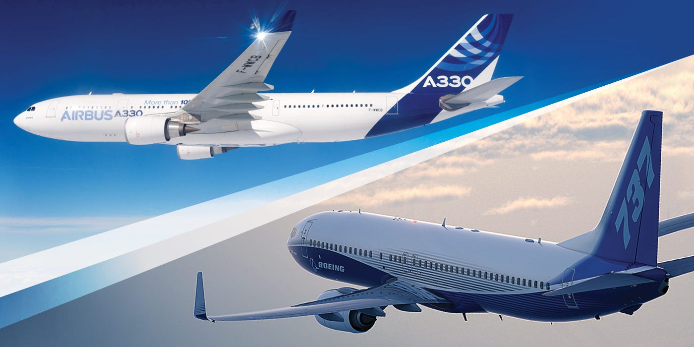
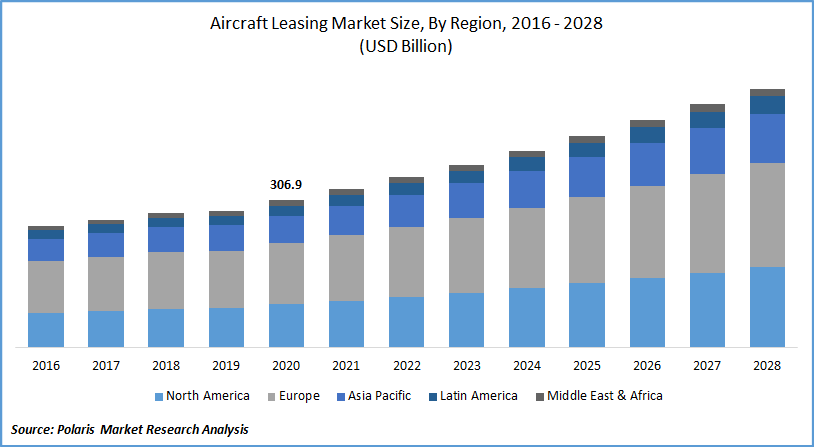

The middle airliner
Example of a middle entity startup business model


Airliners used to buy aircraft from boeing, airbus, and other airplanes constructors. Once these planes were delivered to them, airliners used to operated them by taking charge of their routines and regulatory planned maintenance operations. This process of airplane exploitation is a huge industrial process that needs many hands like aircraft mechanical engineers, maintenance technicians, and other technical skilled people. Added to this need for human resources is the huge need for investment in infrastructure and tools for maintaining the airplanes.
With the birth of low-cost airliners that disrupted some of the routes of the major airliners, the competition became harder, making all airliners rethink their business models and cut costs in order to compete with the new entrants. One of the ways for them to cut costs was to outsource some core technical processes like aircraft maintenance to companies that are focused on such kinds of tasks.
Also, airliners started to lease airplanes rather than owning them what reduces the cost of ownership and the amortization weight on the balance sheet what in turn gives them a better financial shape and look for a publicly traded company that seek to maximize revenue on net asset RONA.
Some companies have then emerged offering a range of aircraft for leasing. Such leading companies like Avolon buy and own aircraft that they offer to airliners who operate them.
What you can see from this transformation is what professor Clayton Christensen describes with his theory about disruption when he gives the example of Asus and its relationship with Dell. Because airliners are moving to where they make most of their profit which is not maintaining and buying aircraft but acquiring and nurturing customers. They by doing this are leaving segments of their business process to other companies that are specializing themself in such kinds of processes.
Airliners now are marketing entities specialized in finding flyers and taking the most profit from them rather than these big companies owning many aircraft and employing many technicals persons that we used to see.
Here you have two kinds of businesses that have relationships and share a common value network and it is a clear pathway to be this middle business that I was describing in this article title the middletribe era. You can exploit the digital medium and be this next middle business that will operate a tech-enabled platform that will connect these airplanes leasing companies to the airliners.
More than a marketplace this tech-enabled product that you will operates can be a market network.
Here are some numbers about the aircraft leasing companies

As you you will be in the middle your revenues will likely be a portion of each transactions. Then these data above can give you an insight about the revenue you will get given the share of transactions that you will capture.
This a business model worth studying and implementing.
Try it.
PS : But like it was for the case of Asus with Dell, I am not expecting that aircraft leasers will a day become airliners by selling tickets directly to customer and onboarding them into the airplanes they own like Asus did with computers. You can also see that if this change happen at large scale boeing and airbus will deal with a new set of customers focused on owning and maintaining airplanes for lease only.